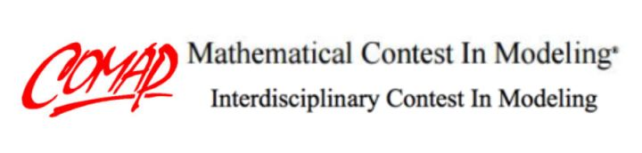
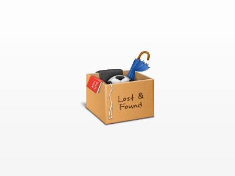
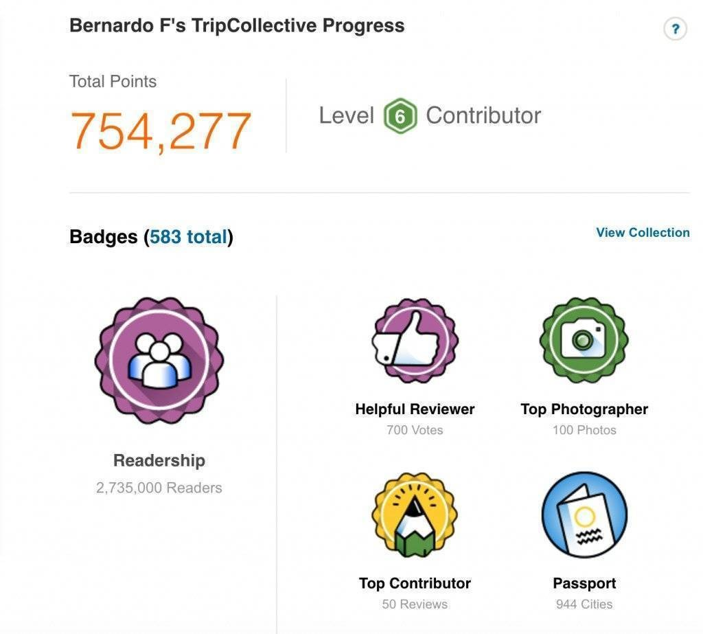

-

MCM/ICM Problem C: “Cooperate and Navigate”, Mathematical Contest in Modeling
• As the project leader, organize team members to carry out operations, assign tasks and continuously detect the progress
• Connect with the responsible professor as the project manager
- 
Lost and Found Platform
• Conducted demand analysis of the platform through reading literature and using questionnaires to investigate the situation of the lost and found in university
• Established an overall architecture of the platform; utilized MySQL to build the database; used Apache & Tomcat to connect the database and improved database security protection
• Completed Java programming of the main program and C programming of the administrator at PC
-
Network Equipment Identification Technology
• Tested the IP of the equipment by using NMap (Network Mapper) scanner
• Screened the training sets and test sets by Naive Bayesian algorithm
• Identified the equipment by the fingerprint information of the recording devic
- 
HappyTravel
• A travel sharing APP where users can check in at various types of places and share photos and reviews of that place
• Using google account system to login the app
• Using GPS to check-in location
• Using cloud database (firebase) to store data and image
-
RecipeSearchBot based on Discord
• Data Source: TheMealDB
• Platform: Discord
• Infrastructure: fly.io
• Database: MongoDB
• Building System: Gradle
• Language: Java
• Discord Integrator: JDA